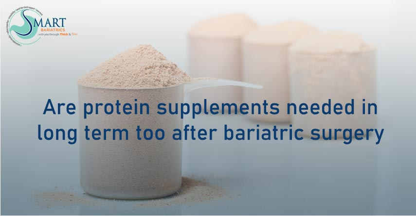

Hair loss after bariatric surgery can be one of the most unexpected and stressful experiences during your weight loss journey. While the transformation in your health and body is positive, noticing hair falling out in clumps can feel discouraging. The important thing to understand is that this condition is very common and usually temporary.
Many patients who undergo weight loss procedures with a Top Bariatric Surgeon in India, Dr. Atul Peters, experience hair thinning within a few months after surgery. This happens because your body is adjusting to rapid weight loss, reduced calorie intake, and changes in nutrient absorption.
The good news? With the right nutrition, care, and medical guidance, you can control hair fall and promote healthy regrowth. In this detailed guide, you’ll learn the exact causes, prevention strategies, treatment options, and expert-backed tips to stop hair loss after bariatric surgery.
How to Stop Hair Loss After Bariatric Surgery?
Learn how to stop hair loss after bariatric surgery with simple tips, causes, and effective solutions to promote healthy hair regrowth and prevent further thinning.
Book Your Appointment TodayUnderstanding Hair Loss
Hair loss after bariatric surgery is a common and temporary condition that many patients experience during their recovery phase. It is medically known as telogen effluvium, where a larger number of hair strands enter the resting phase and begin to shed more than usual. This typically happens because the body is adjusting to rapid weight loss, reduced calorie intake, and changes in nutrient absorption. Instead of focusing on hair growth, the body prioritizes essential organs, which leads to temporary hair thinning.
Normally, hair grows in a cycle that includes growth, rest, and shedding phases. After surgery, this cycle gets disrupted, causing more hair to shift into the shedding phase at the same time. As a result, you may notice increased hair fall while brushing, washing, or even running your fingers through your hair.
- Hair loss usually starts 2–4 months after surgery
- It peaks around 4–6 months
- It is temporary and improves with proper nutrition
- Hair regrowth begins once the body stabilizes
Is Hair Loss Permanent?
This is one of the most common concerns—and the answer is reassuring. Hair loss after bariatric surgery is not permanent in most cases.
Timeline of Hair Loss
- Starts: 2–4 months after surgery
- Peak: Around 4–6 months
- Recovery: 6–12 months
Once your nutritional intake improves and your body stabilizes, hair regrowth begins naturally.
Main Causes of Hair Loss After Bariatric Surgery
Protein Deficiency
After bariatric surgery, your food intake reduces significantly, which often leads to low protein consumption. Since hair is made of keratin (a type of protein), this deficiency weakens hair follicles and slows down growth. As a result, hair becomes thin, fragile, and starts shedding more than usual. Ensuring adequate protein intake is one of the most important steps to maintain healthy hair after surgery.
Iron Deficiency
Iron is essential for carrying oxygen to hair follicles. When iron levels drop, the hair roots do not receive enough nourishment, leading to hair thinning and excessive shedding. This condition is quite common after bariatric surgery due to reduced absorption and intake.
- Low iron levels reduce oxygen supply to the scalp
- Can cause fatigue along with hair loss
- Needs regular monitoring through blood tests
Vitamin and Mineral Deficiencies
Deficiencies in key nutrients like Vitamin B12, Biotin, Zinc, and Folate can significantly affect hair health. These nutrients are essential for cell repair and hair growth, and their deficiency can lead to brittle, weak hair.
- Vitamin B12 supports red blood cell production
- Biotin strengthens hair structure
- Zinc helps repair hair tissues
- Folate supports new cell growth
Rapid Weight Loss
Rapid weight loss after bariatric surgery can act as a shock to the body. This stress pushes a large number of hair follicles into the resting phase, leading to increased hair shedding. This type of hair loss is usually temporary but can be noticeable.
Hormonal Changes
The body undergoes hormonal changes after surgery due to sudden weight loss. These fluctuations can disrupt the normal hair growth cycle, causing increased hair fall. However, as the body stabilizes, hormonal balance improves, and hair growth gradually returns.
How to Stop Hair Loss After Bariatric Surgery
Increase Protein Intake
One of the most effective ways to reduce hair loss is by increasing protein intake. Protein helps rebuild hair structure and strengthens follicles, promoting healthy regrowth.
- Aim for 60–80 grams of protein daily
- Include eggs, chicken, fish, paneer, and lentils
- Consider protein shakes if needed
Take Prescribed Supplements
Supplements are essential after bariatric surgery because the body cannot absorb enough nutrients from food alone. Taking supplements regularly helps prevent deficiencies that cause hair loss.
- Multivitamins support overall health
- Iron prevents anemia-related hair loss
- Vitamin B12 improves cell production
- Biotin and zinc strengthen hair
Follow a Balanced Nutrient-Rich Diet
A balanced diet ensures your body gets all the essential nutrients needed for hair growth and recovery. Including a variety of foods helps maintain both overall health and hair strength.
Stay Hydrated and Maintain Routine
Hydration plays a key role in maintaining scalp health and improving nutrient absorption. Drinking enough water supports hair follicles and prevents dryness, which can worsen hair fall.
- Drink at least 2–3 liters of water daily
- Avoid skipping meals
- Follow a structured post-surgery diet plan
Manage Stress and Practice Gentle Hair Care
Stress can worsen hair loss, especially after surgery. Managing stress and adopting gentle hair care practices can help protect your hair and improve its quality over time.
- Practice yoga or meditation
- Avoid heat styling tools
- Use mild, sulfate-free shampoos
- Avoid tight hairstyles
Best Foods to Prevent Hair Loss After Bariatric Surgery
Protein-Rich Foods
Protein-rich foods are essential for maintaining hair strength and promoting regrowth. Including them in your daily meals helps reduce hair thinning and supports healthier hair over time.
- Eggs, chicken, fish
- Paneer and dairy products
- Lentils and legumes
Iron-Rich Foods
Iron-rich foods help improve blood circulation to the scalp and ensure proper oxygen supply to hair follicles, reducing hair fall.
Vitamin-Rich Fruits and Vegetables
Fruits and vegetables provide essential vitamins and antioxidants that help repair damaged hair cells and improve scalp health. Regular intake supports long-term hair growth and strength.
- Oranges and citrus fruits (Vitamin C)
- Carrots (Vitamin A)
- Spinach and leafy greens
Biotin-Rich Foods
Biotin plays a crucial role in improving hair thickness and strength. Including biotin-rich foods can help reduce hair breakage and support healthier strands.
Zinc and Healthy Fat Sources
Zinc helps in tissue repair and hair growth, while healthy fats nourish the scalp and improve hair texture. A diet rich in these nutrients supports overall hair health.
- Nuts and seeds
- Avocados
- Whole grains
Common Mistakes That Increase Hair Loss
Avoid these common errors:
- Ignoring protein intake
- Skipping supplements
- Poor hydration
- Following crash diets
- Using harsh hair products
Long-Term Hair Care After Bariatric Surgery
To maintain healthy hair long-term:
- Continue a balanced diet
- Stay consistent with supplements
- Maintain hydration
- Manage stress
- Follow a healthy lifestyle
How to Stop Hair Loss After Bariatric Surgery?
Learn how to stop hair loss after bariatric surgery with simple tips, causes, and effective solutions to promote healthy hair regrowth and prevent further thinning.
Book Your Appointment TodayFinal Thoughts
Hair loss after bariatric surgery can feel overwhelming, but it is a temporary and manageable condition. The key lies in maintaining proper nutrition, especially protein intake, taking supplements regularly, and following expert medical advice.
Under the guidance of a Top Bariatric Surgeon like Dr. Atul Peters, you can effectively minimize hair loss and support healthy regrowth. Stay consistent with your diet, be patient with your body, and remember—this phase is just a small part of your overall transformation toward better health.